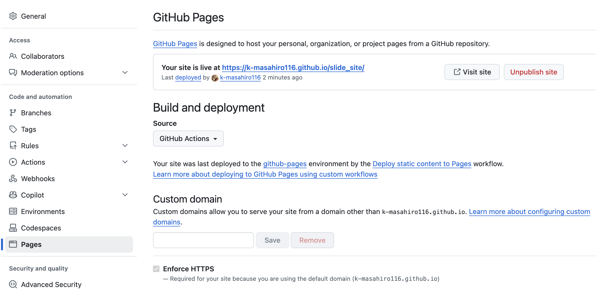

はじめに
GitHub Pages 公開手順
任意のサイトを GitHub Pages で公開するまでの流れを説明します。

はじめに
GitHub Pages とは
- GitHub リポジトリから静的サイトを無料で公開できるサービスです。
- HTML / CSS / JavaScript など、ビルド済みのファイルをそのまま配信できます。
- 公開 URL は
https://<ユーザー名>.github.io/<リポジトリ名>/です。
公開手順
事前準備
- GitHub アカウントを作成する
- 公開したいサイトのファイルを用意する
- GitHub にリポジトリを作成し、ファイルを push する
トップページは index.html を置いた場所（通常はリポジトリ root）になります。
公開手順
ブランチから公開
ビルド不要の静的サイト向けの簡単な方法です。
- リポジトリの
Settings→Pagesを開く Build and deploymentでDeploy from a branchを選ぶ- Branch を
main、Folder を/ (root)に設定 Saveを押して数分待つ
公開手順
GitHub Actions で公開
任意のフォルダ構成や、将来の自動デプロイに向いています。
.github/workflows/にワークフローを追加するmainブランチへ push する- Actions の実行が成功すると Pages に反映される
Settings → Pages の Source は GitHub Actions を選びます。
ワークフロー
ワークフローの設定手順
- リポジトリ root に
.github/workflows/フォルダを作成する - その中に
deploy.yml（名前は任意）を作成する Settings→Pages→SourceをGitHub Actionsに変更する- ファイルを
mainブランチへ push する Actionsタブで実行状況を確認する
初回 push 後に自動でジョブが起動し、成功すると Pages に反映されます。
ワークフロー
ワークフロー例
リポジトリ全体をそのまま公開する最小構成です。
name: Deploy static content to Pages
on:
push:
branches: ["main"]
permissions:
contents: read
pages: write
id-token: write
jobs:
deploy:
runs-on: ubuntu-latest
steps:
- uses: actions/checkout@v4
- uses: actions/configure-pages@v5
- uses: actions/upload-pages-artifact@v3
with:
path: "."
- uses: actions/deploy-pages@v5ワークフロー
@v4 / @v5 の意味
uses: actions/checkout@v4 の @v4 は、使用する Action のバージョンを指定するタグです。
- GitHub Actions の各ステップは Action と呼ばれる再利用可能な処理単位です。
@v4や@v5はそのメジャーバージョンを示し、破壊的変更が入ると番号が上がります。- バージョンを固定することで、予期しない挙動の変化を防げます。
@mainや@latestで常に最新を使うこともできますが、安定性のためバージョン固定が推奨です。
確認・Tips
公開を確認する
Settings→Pagesに表示される URL を開く- Actions タブでデプロイが
successになっているか確認する - 表示が古い場合は、数分待ってから再読み込みする
更新が反映されないときは、ブラウザのキャッシュを消して確認してください。
確認・Tips
よくあるポイント
- 公開対象は静的ファイルのみです（PHP や DB は動きません）。
- リポジトリが Private でも Pages 公開は可能です（プランにより制限あり）。
- サブディレクトリ配信では、リンクや画像パスを相対パスにすると安全です。
- 複数デプロイが重なると古い版が表示されることがあります。Actions の最新成功版を確認してください。